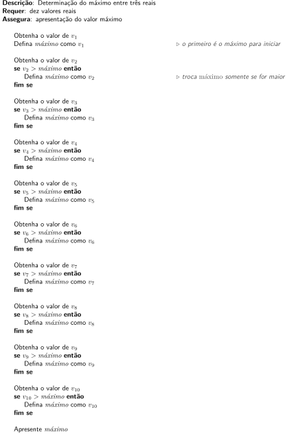
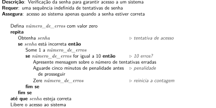

Estruturas algorítmicas básicas para processamento de sequências de dados
Este capítulo considera o processamento de sequências de dados, o que significa repetir ações sobre cada dado individualmente. Em decorrência, também aborda outras ações que sejam repetitivas.
Sequências de dados
Uma sequência de dados ocorre quando, por exemplo, quando há uma coleção relativamente grande de dados a serem considerados por um algoritmo.
Para exemplificar, inicialmente é considerado um problema simples: determinar o valor máximo entre três valores reais. Uma solução é dada no Algoritmo 1.
Algoritmo 1: Determinação do máximo entre três valores reais.
Há um volume de dados pequeno para esse problema, com apenas três valores. Supondo agora que o problema abordasse não apenas uma trinca de valores, mas uma dezena deles. O Algoritmo 2 apresenta uma solução para esse novo problema, seguindo a mesma linha de raciocínio da solução anterior.
Algoritmo 2: Determinação do máximo entre dez valores reais.
Visivelmente é uma solução longa, embora não seja complexa. Entretanto, escrever uma solução similar para 20, 30 ou 100 valores usando essa estratégia é até factível, porém nada prática.
Uma estrutura de organização alternativa para esse problema poderia ser como a apresentada no Algoritmo 3.
Algoritmo 3: Determinação do máximo entre dez valores reais (versão 2).

Para uma quantidade grande de valores, a solução pode ser ampliada apenas pelo acréscimo de novas variáveis \(v_i\) e novas verificações. Não é elegante, mas certamente mais prática, e talvez mais clara, que no Algoritmo 2.
Um ponto interessante do Algoritmo 3 é que, feita a entrada de uma variável e confrontado seu valor com o máximo, ela não é mais usada. Isso leva a uma nova versão: o Algoritmo 4, na qual cada nova obtenção de valor reusa a mesma variável, substituindo seu valor por um novo da sequência de entrada.
Algoritmo 4: Determinação do máximo entre dez valores reais (versão 3).
Para essa versão, aumentar a quantidade de itens a serem processados pode ser feita apenas acrescentando-se novas leituras e novas comparações, algo como um “copia-e-colar”. Entretanto, ainda a solução não é minimamente elegante, mesmo sendo mais prática que as anteriores.
Uma estrutura de repetição é uma ferramenta usada no pseudocódigo para indicar que algumas ações serão executadas várias vezes. Assim, A versão algorítmica final para o problema do máximo entre 10 valores pode ser dada pelo Algoritmo 5.
Algoritmo 5: Determinação do máximo entre dez valores reais (versão 4).
A alteração desse algoritmo para processar, por exemplo, uma sequência de 1000 valores, requer apenas que a linha que indica “do segundo até o décimo” seja reescrita “do segundo até do milésimo”, contemplando uma solução para um novo problema, que é bem maior que os anteriores.
Caracterização das sequências
Nos problemas computacionais, as sequências se apresentam de algumas formas bem características. Conquanto não sendo as únicas apresentações com que sequências podem assumir, estas são as mais comuns:
- as que simplesmente acabam;
- as com indicação de término com um valor especial (sentinela);
- as de comprimento previamente conhecido;
- as prefixadas com a quantidade de itens.
Supondo que haja dados armazenados em um arquivo, a serem processados um a um, eles se caracterizam como uma sequência que, processado o último dado, a repetição sobre eles se encerra. Assim, os dados são processados até que não haja mais nada a processar. Naturalmente, essa perspectiva vale não somente para arquivos, mas também para dados digitados diretamente em um terminal.
Uma alternativa para a organização dos dados é ter um dado especial que indique que a sequência terminou. Isso ocorre, por exemplo, na representação de cadeias de caracteres na linguagem C, sendo usado um caractere nulo (\0) para indicar que os bytes da cadeia terminaram. Essa alternativa pode ser empregada para entrada de dados via terminal, quando valores são digitados e um valor especial (como zero, por exemplo), significa que a entrada terminou. Esta forma de representação de sequências requer a escolha de um valor especial, conhecido geralmente como sentinela, o qual não pode fazer parte da sequência.
Algumas sequências possuem comprimento conhecido. Se dados são colhidos diariamente, haverá uma sequência de 365 (ou 366) dados em um ano. Para o processamento, sabe-se previamente quantos dados existem e controlar uma repetição para processá-los pode ser feita mais facilmente.
Sendo uma forma bastante comum, uma sequência pode ser precedida da quantidade de itens que ela contém. Na linguagem Pascal, uma cadeia de caracteres é precedida por um byte que indica seu comprimento. No processamento deste tipo de sequência, o controle da repetição para o processamento é conhecido logo no início. A título de exemplo, este seria o caso de um polígono qualquer, descrito pelas coordenadas de seus vértices, ser precedido da quantidade de vértices, com triângulos precedidos por um 3 e pentágonos, por um 5.
As duas primeiras caracterizações de sequências, as que acabam e as que possuem sentinela, são chamadas repetições indefinidas ou abertas. Nelas, não é conhecido previamente quantas vezes as ações de processamento serão repetidas. Em contraposição, quando o comprimento da sequência é fixo ou precedido de um valor indicando quantos itens são, a repetição se caracteriza como definida, sabendo-se quantas vezes as ações serão executadas.
Dado o universo de dados existentes, estas possibilidades não contemplam, é claro, todas as sequências, mas restringem nichos de grande relevância neste contexto.
Fluxo de execução com repetições
Nos algoritmos escritos com pseudocódigo há três estruturas clássicas para indicar a repetição, embora não sejam as únicas. Elas são representadas por enquanto, repita e para.
Quando as repetições são indefinidas quanto ao número de vezes, as estruturas enquanto e repita são empregadas. Repetições sobre sequências de dados para as quais se sabe antecipadamente o número de iterações, ou seja, para as repetições definidas, a estrutura para é utilizada.
Fluxo com enquanto
O enquanto é uma estrutura que indica uma repetição. Ela se apresenta como apresentado na sequência.
A lógica que define o fluxo de execução com a estrutura enquanto é baseada em uma condição, a qual pode ser avaliada como verdadeira ou falsa. Se a condição for verdadeira, todas as instruções condicionadas da estrutura são executadas uma vez. Ao final da execução, a condição é avaliada novamente e nova execução das ações internas pode ou não ser feita, a depender do resultado.
Como consequência, a estrutura indica que as instruções condicionadas podem ser executadas uma quantidade indefinida de vezes, que pode ser zero ou mais. É, assim, importante destacar que, sendo a condição falsa já na primeira verificação, nenhuma instrução interna é executada.
Para que a estrutura tenha sentido prático, é esperado que as instruções alterem de alguma forma dos dados para que, eventualmente, a condição se torne falsa e a repetição se encerre.
O processamento de sequências de dados cuja quantidade de itens não seja previamente conhecida é bastante comum e, assim, uma repetição de obtenção de valores com enquanto é bastante apropriada. O Algoritmo 6 é um exemplo dessa necessidade. Ele apresenta uma solução para, dadas várias idades de pessoas (podendo não haver nenhuma), determinar quantas delas são maiores ou iguais a 18.
Algoritmo 6: Determinação da quantidade de pessoas com maioridade legal.
O enquanto verifica se há dados disponíveis como entrada e, havendo, obtém o dado (uma idade) e, sendo maior ou igual a 18 anos, conta essa ocorrência. Quando não houver mais dados na entrada, a repetição se encerra e a contagem é apresentada. Para o caso da entrada ser vazia, a condição do enquanto já é falsa logo no início e, assim, nenhuma leitura é feita, situação em que o contador permanece com valor zero.
O uso do sentinela de dados também é viável de ter sua lógica organizada como enquanto. Um exemplo simples é a soma de uma série de números reais, todos maiores que zero. O sentinela será o número zero, que não faz parte dos dados válidos. Uma solução para esse problema é apresentada no Algoritmo 7.
Algoritmo 7: Soma de uma sequência de números reais com sentinela.
A estratégia é fazer, antes da repetição, uma primeira leitura, que pode ser um valor válido ou o próprio sentinela (quando sequência de números está vazia). Antes de somar esse valor, é feita a comparação com o sentinela. Sendo o valor zero, nenhuma repetição é efetuada e a soma zero é o resultado apresentado. Caso seja um valor válido, ele é somado e, antes de nova verificação, o próximo valor da sequência de entrada é obtido, fechando um ciclo.
Fluxo com repita
A estrutura repita também se aplica a repetições indefinidas. Sua estrutura é como se apresenta a seguir.
O repita é uma estrutura que possui uma condição a ser verifica e sua avaliação é feita depois da execução dos comandos condicionados. Dessa forma, todos os comandos internos são executados e, então, a condição é verificada; resultando em falso, uma nova repetição é feita, sendo verdadeira, repetição se encerra.
Por sua estrutura, os comandos internos do repita são executados pelo menos uma vez.
Para exemplificar, pode ser considerado o problema da verificação da senha digitada por um usuário para acesso ao sistema, cujas regras são: se a senha digitada for correta, o acesso é dado; caso haja dez erros consecutivos, uma penalização de tempo (“aguarde cinco minutos para tentar novamente”) é aplicada. A quantidade de senhas que serão verificadas é desconhecido: se houver a inserção correta da senha logo no início há apenas uma verificação; se houver senhas inválidas, outras verificações serão necessárias.
O Algoritmo 8 ilustra como essa questão pode ser abordada.
Algoritmo 8: Verificação de senha para acesso a um sistema.

Nessa solução, a repetição somente se encerra com a digitação da senha correta, o que pode levar uma eternidade. O algoritmo não detalha como a senha é efetivamente verificada, o que não é, porém, relevante no momento.
Sequências de dados com valor sentinela também podem ser processadas usando-se a estrutura repita. O problema resolvido pelo Algoritmo 7, que usa -enquanto, tem sua versão com repita apresentada no Algoritmo 9.
Algoritmo 9: Soma de uma sequência de números reais com sentinela (versão 2).
Nessa solução, a cada repetição é obtido um valor da entrada e a soma é feita apenas para os valores que não sejam iguais ao sentinela. Quando o valor sentinela é obtido da entrada, ele é ignorado e, em seguida, a repetição se encerra e o resultado final é apresentado. Caso não haja valores para serem somados, o resultado zero é apresentado.
Fluxo com para
O para é indicado para repetições definidas, ou seja, para aquelas em que a quantidade de repetições é conhecida de antemão. A seguir é apresenta a estrutura do para.
Há muitas variações comuns para a repetição com para. Elas são apresentadas a seguir.
A versão mais comum para um para é com o uso de um iterador (normalmente uma variável genérica i estabelecendo o valor inicial e o final. Seguem exemplos.
O uso do for é considerado sempre crescente1. Assim, uma repetição de 1 até 1 é feita apenas uma vez e para de 0 até -10 não há nenhuma repetição. Neste livro, portanto, essa é a interpretação consistentemente seguida.
Como exemplo, a repetição seguinte pode ser considerada.
Nela, se \({\Id{final} > \Id{inicial}}\), a repetição vai de inicial até final de 1 em 1, em um total de \({\Id{final} - \Id{inicial} + 1}\) vezes. Caso inicial\(\,=\,\)final as instruções internas são executadas uma única vez. Finalmente, se \({\Id{inicial} > \Id{final}}\), não há nenhuma execução.
Repetições regressivas
As repetições com para são, em princípio, crescentes. Para especificar uma repetição decrescente é necessário que ela se torne evidente e não requeira interpretações que podem variar entre diferentes pessoas.
Neste livro há duas formas de indicar “contagens regressivas”: explicitamente na instrução ou alterando o passo com que a variável de controle da repetição é atualizado.
Repetições com passo diferente de 1
Conforme apresentado nos demais exemplos deste capítulo, assume-se por padrão que os incrementos (ou decrementos com regressivo até) seja sempre unitários. Ainda assim é possível indicar iterações com passos diferentes.
Seguem alguns exemplos.
Embora incomuns2, repetições com para que usem valores reais também podem ser usadas